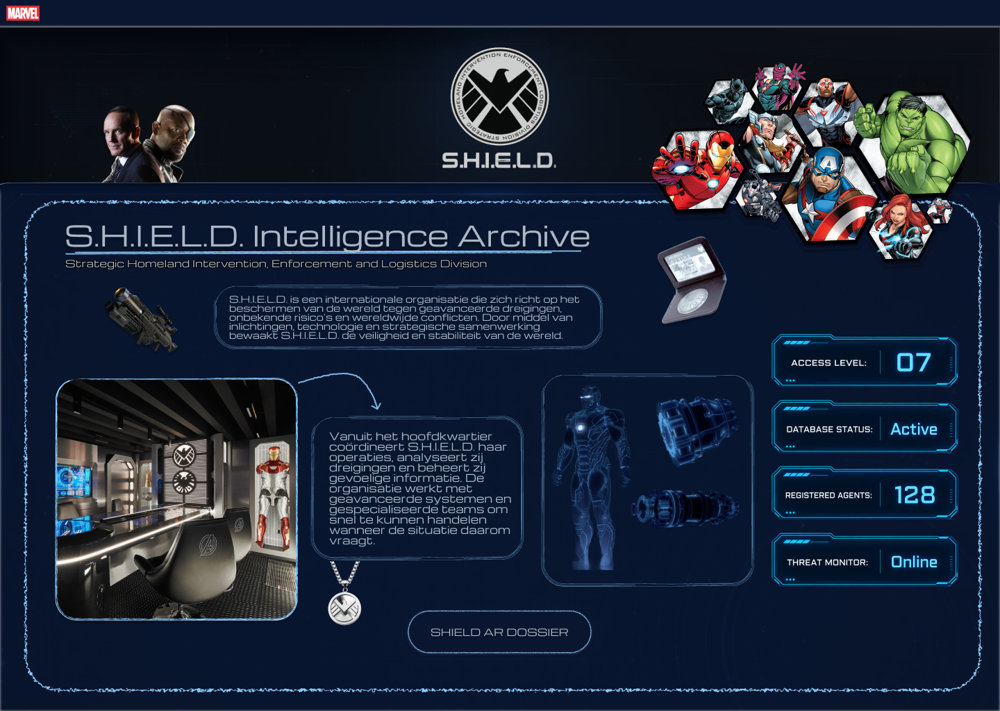
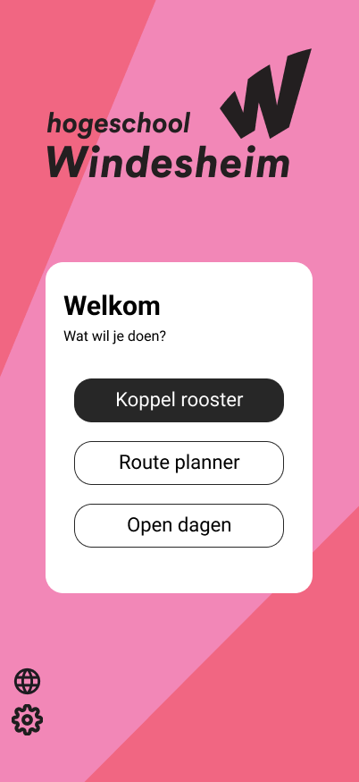

AR-project
Een AR-ontwerpproject met een interactieve S.H.I.E.L.D.-interface en omgevingservaring.
Bekijk projectEen selectie van projecten waarin ik UX/UI, programmeren, samenwerken en experimenteren met technologie heb toegepast.

Een AR-ontwerpproject met een interactieve S.H.I.E.L.D.-interface en omgevingservaring.
Bekijk projectEen eenvoudig programma om uren bij te houden en overzicht te krijgen in gewerkte tijd.
Bekijk projectEen praktijkopdracht voor een echte opdrachtgever, met aandacht voor communicatie en resultaat.
Bekijk project
Een Windesheim-app-prototype gemaakt tijdens een intensieve hackathon met korte iteraties.
Bekijk project